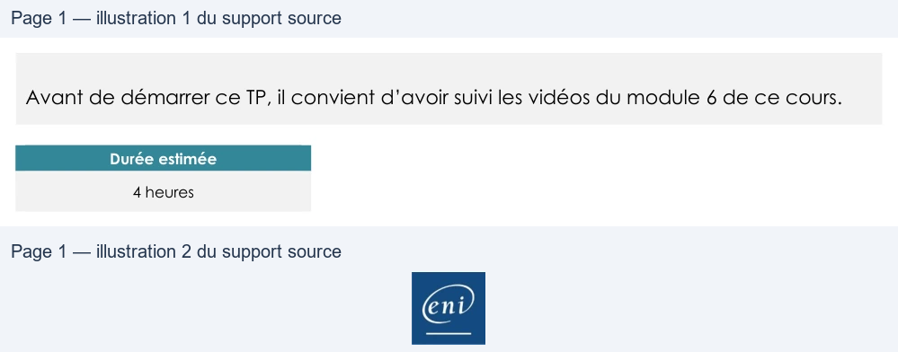

Transcription du document du Drive TSSR. La mise en forme est adaptée au Web ; les compléments IA du portail sont présentés séparément.
Initiation à PowerShell
TP du Module 06
Avant de démarrer ce TP, il convient d’avoir suivi les vidéos du module 6 de ce cours.
Durée estimée
4 heures
Objectifs :
•
Démarrer avec le scripting PowerShell
Activité 1 - Comprendre et commenter un script
Difficulté *
Vous devez analyser un script fourni, le comprendre et le commenter un maximum de
lignes.
Activité 2 - Correction de bugs
Difficulté ***
Vous avez trouvé un script sur Internet qui répond totalement à vos besoins. Sont dissimulées
dans ce script de (très) nombreuses erreurs de syntaxe, vous devez le corriger pour qu'il
fonctionne.
L'objectif de ce script est de gérer la création de zones DNS primaire et secondaire.
Activité 3 - Écriture de scripts
Difficulté ***
Vous avez le choix entre l’écriture 2 scripts : la gestion complète de la configuration réseau
d’une machine ou la mise en place d’un menu de choix pour réaliser la gestion des
utilisateurs Active directory.
Page 1/1
© ENI – Tous droits réservés
